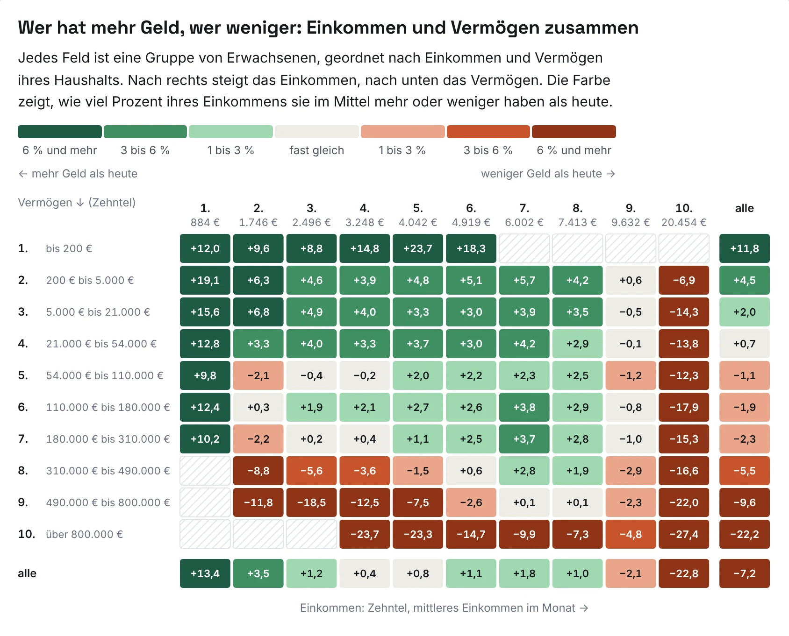

Mut zur Zukunft · Ein Buch von Tomas Hecker
Wir können uns die Zukunft leisten
Wie die meisten mehr Geld behalten, der Staat schuldenfrei wird und Deutschland aufblüht. Was die Forschung für die nächsten Jahre erwartet, warum Zuversicht begründet ist und was wir jetzt tun können, damit alle davon profitieren.
Die Zukunft ist kein Wetter
Die Zukunft wird gemacht, von Menschen, durch Entscheidungen, jeden Tag.
Noch nie in der Geschichte konnten wir mit so wenig Arbeit so viel herstellen. Was vor 300 Jahren hundert Menschen auf dem Feld erarbeitet haben, schafft heute ein einziger Mensch mit Maschinen. Die entscheidende Frage ist nicht, ob genug für alle da ist, sondern wie wir es verteilen und wofür wir die gewonnene Zeit nutzen.
Woher wir kommen
300 Jahre Fortschritt in Zahlen und Grafiken, und warum Arbeit nicht verschwindet, sondern wandert.
Wohin es geht
Was Forschung und Unternehmen für Deutschland 2035 und 2050 erwarten, und warum Zuversicht keine Naivität ist.
Was wir tun können
Konkrete, durchgerechnete Vorschläge, allen voran ein einheitliches Steuersystem für das Zeitalter der KI.
Ein einheitliches Steuersystem
Jedes Einkommen nach denselben Regeln
„Jede Einkommensart wird nach den gleichen Regeln und mit den gleichen Freibeträgen behandelt. Denn die Würde des Menschen ist gleich, ob man arm oder reich ist.“
Das Existenzminimum bleibt steuerfrei, für jeden Erwachsenen und jedes Kind. Vom Lohn gehen keine Beiträge mehr ab, ohne Grenze, und der Arbeitgeber zahlt seine Anteile als Lohn aus. Lebensmittel, Trinkwasser, Bus und Bahn ohne Mehrwertsteuer.
Erwachsenen haben zum Start mehr Geld als heute, wenn sie so viel einkaufen wie heute, rund 70 von 100. Mit den Kindern gezählt sind es rund 73 von 100 Menschen. Eine Familie mit zwei Kindern, 5.000 € brutto und eigenem Haus hat 1.059 € im Monat mehr.
Wer im bezahlten eigenen Haus wohnt, schon Rente bezieht oder aus versteuertem Ersparten lebt, zahlt nicht doppelt. Im ersten Jahr fehlen dem Staat 11,8 Mrd. €, im zweiten noch 7,8 Mrd. €. Das passt in den Spielraum der Schuldenbremse. Ab 2031 bleibt jedes Jahr ein Überschuss, der Kredit von höchstens 21,5 Mrd. € ist 2033 getilgt. Mit dem Zukunftsplan ist der Staat 2064 schuldenfrei, ohne höhere Mehrwertsteuer, im zuversichtlichen Fall schon 2046. Jede Zahl ist im Buch erklärt und hier im Rechner nachprüfbar.

Was bedeutet das für deinen Haushalt?
Der Steuerrechner vergleicht heute und Vorschlag, zeigt die Staatsfinanzen bis 2070 und die CO₂-Abgabe. Er läuft im Browser und speichert nichts.
E-Auto oder Verbrenner?
Was ein Elektroauto über sein ganzes Leben im Vergleich zum Verbrenner kostet, privat oder als Dienstwagen. Mit den Regeln für Kfz-Steuer und Dienstwagen, Stand 2026.
Wärmepumpe, Gas oder Öl?
Was eine neue Heizung über 20 Jahre kostet: mit Förderung, CO₂-Preis und der neuen Pflicht zur Bio-Beimischung, Stand 2026. Dazu Dämmen und neue Fenster: niedrigere Vorlauftemperatur, bessere Wärmepumpe, weniger CO₂, auch mit dynamischem Tarif.
PV, Speicher, Wärmepumpe und E-Auto
Ein Jahr Stunde für Stunde mit dem Wetter deines Orts (Postleitzahl): Süd-, Ost- oder Westdach, die wirtschaftlichste Speichergröße und der Strompreis für Wallbox und Wärmepumpe bei Festpreis, dynamischem Tarif und § 14a, dazu der Vorschlag aus dem Buch: 8 Stunden ohne Netzentgelt.
Balkonkraftwerk und Speicher für Mieter
Wie viel Strom vom Balkon du selbst nutzt, was ein kleiner Speicher dazu bringt und nach wie vielen Jahren sich beides bezahlt macht. Mit den Regeln für Mieter und Quellen zu jeder Annahme.
Bauch, Zucker und Lebenszeit
Was Bauchumfang und Langzeitzucker statistisch an Lebensjahren kosten, was das Krankenkasse und Gesellschaft über ein ganzes Leben kostet und was eine Zuckerabgabe bis 2070 bringen kann. Nach großen Studien, mit allen Quellen.
Vortrag zum Buch „Wir können uns die Zukunft leisten“
Die Folien zum Buch: woher wir kommen, warum es ohne Reform nicht geht, ein Steuersystem für alle Einkommen und was es für den Staat und zehn typische Haushalte bis 2070 bedeutet. Als PDF zum Nachlesen.
Vortrag „Strom clever managen“
Die Folien des Vortrags in Idstein vom November 2026: PV, Speicher, Wärmepumpe, E-Auto, dynamische Tarife und was Mieter tun können. Als PDF zum Nachlesen.
Staatsschulden bis 2070
Ohne Reform in die Pleite, mit Reform schuldenfrei
Ohne Reform steigen die Staatsschulden im mittleren Fall bis 2070 auf 242 % der Wirtschaftsleistung, ab 2059 höher als in Griechenland bei der Pleite. Mit der Reform und dem Zukunftsplan ist der Staat 2064 schuldenfrei. Danach senkt die Hälfte des Überschusses die Steuern. Die andere Hälfte baut Vermögen im Zukunftsfonds auf, 2070 sind es 8 % der Wirtschaftsleistung.
Staatsschulden in % der Wirtschaftsleistung, 2025 bis 2070, oben und unten mit derselben Skala; oben ohne Reform im mittleren Fall nach Ursachen, unten mit Reform und Zukunftsplan
Das Buch
Inhalt
320 Seiten, mit vielen Grafiken. Die Kapitel 4 bis 6 zeigen in einfachen Worten, was die Vorschläge dir bringen. Im Anhang steht jede Rechnung mit ihren Annahmen.
- ·Die Reform auf einen Blick
- 1Was auf uns zukommt, wenn wir nichts tun
- 2Was die Reform dir bringt
- 3Warum wir uns auf die Zukunft freuen können
- 4Ein einheitliches Steuersystem für alle Einkommen
- 5Damit sich Leistung lohnt: Bildung, Arbeit, Gesundheit und ein moderner Staat
- 6Rechnet sich das? Die Ergebnisse
- 7300 Jahre Fortschritt: Woher wir kommen
- 8Arbeit verschwindet nicht, sie wandert
- 9Deutschland 2035: Was die Forschung erwartet und was Unternehmen planen
- 10Was du selbst tun kannst
- 11Wie jeder Millionär werden kann
- 12Ein Tag im Jahr 2035
- A–CZum Nachrechnen: Steuersystem, Bausteine, Simulation
Das ganze Buch kostenlos lesen
Direkt hier auf der Seite, Kapitel für Kapitel, mit Suche und Verweisen zum Nachrechnen. Oder als PDF, 320 Seiten, 4 MB. Wenig Zeit? Die kostenlose Kurzfassung fasst das Wichtigste auf 20 Seiten zusammen. Gerne weitergeben.
Über den Autor Tomas Hecker, Elektriker, Erfinder und Gründer.
Hoffnung ist kein Gefühl, auf das man wartet. Hoffnung ist eine Tätigkeit.